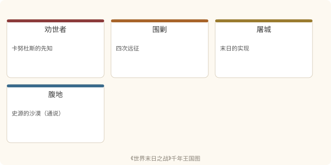

世界末日之战
一、基本信息
| 作者 | 略萨 |
|---|---|
| 成书/出版 | 1981年（作者页 B159 口径：世界末日之战（1981）） Mario Vargas Llosa — Encyclopaedia Britannica（百科全书） |
| 国别/地区 | 秘鲁 |
| 时代 | 现当代 · 20世纪 |
| 体裁 | 长篇小说 |
| 语言 | 西班牙语 |

《世界末日之战》千年王国图（主题·结构图）
二、创作背景
作者页（B159）：略萨 major_works 载'世界末日之战（1981）'（B159 作者页定位，详见 chengshiyugou 条核对）。
题材（通说待核）：1896—97年巴西卡努杜斯农民起义——'劝世者'的千年王国与共和国军队的围剿。
三、内容脉络
'劝世者'与卡努杜斯共和国——四次围剿与屠城（通说待核）。
四、主要人物表
| 人物 | 身份 | 说明 |
|---|---|---|
| 劝世者 | 传教者 | （通说待核） |
| 近卫军? | 政府军 | （通说待核） |
五、主题与艺术特点
- 千年王国运动的兴亡（通说待核）。
- 历史的暴力回声（通说）。
- 群像史诗（通说待核）。
六、影响与评论
- 作者页：略萨历史巨作（B159 作者页口径）。
Mario Vargas Llosa — Encyclopaedia Britannica（百科全书） - 以欧仁·苏？——不：以达·库尼亚《腹地》为史料基础（通说待核）。
Mario Vargas Llosa — Encyclopaedia Britannica（百科全书）
七、阅读建议
难点
- 巴西卡努杜斯史。
- 群像人物表。
- 《世界末日之战》（人民文学出版社/上海译文版本，通说待核）。
- 西班牙文原版。
略萨历史小说之首。
八、待核实
- 1981年出版（Editorial Plaza & Janés说）核对。
- '劝世者'人名与史实（Antônio Conselheiro）待核。
- 达·库尼亚《腹地》史源待核。
本页主要来源
略萨的其他收录作品：城市与狗